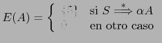
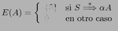

Sig: Esquemas de Traducción Sup: Análisis Sintáctico Ascendente en Ant: Construcción del Árbol Sintáctico Con:
$n), pero no a los que le siguen.
Cuando se inserta una acción
 para su ejecución en medio de una regla
 :
para su ejecución en medio de una regla
 :
yapp crea una variable sintáctica temporal
Las acciones en mitad de una regla cuentan como un símbolo mas en la parte derecha de la regla. Asi pues, en una acción posterior en la regla, se deberán referenciar los atributos de los símbolos, teniendo en cuenta este hecho.
Las acciones en mitad de la regla pueden tener un atributo.
Las acciones posteriores
en la regla se referirán a él como $_[n], siendo n su número de orden
en la parte derecha.